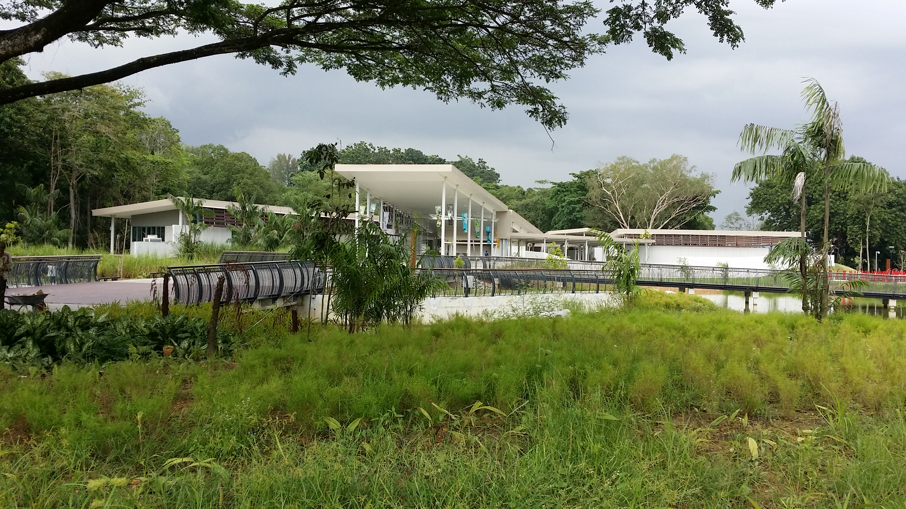
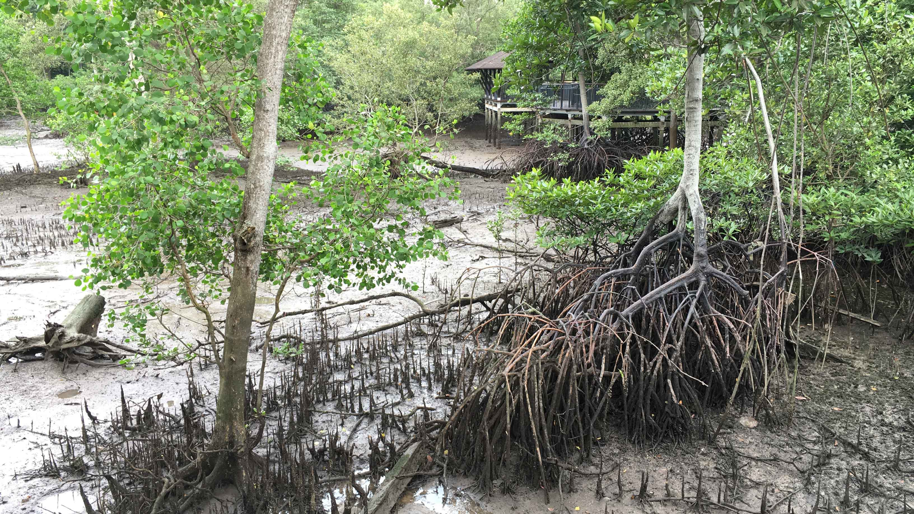
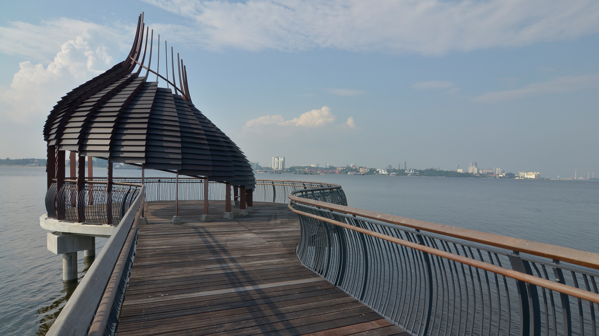
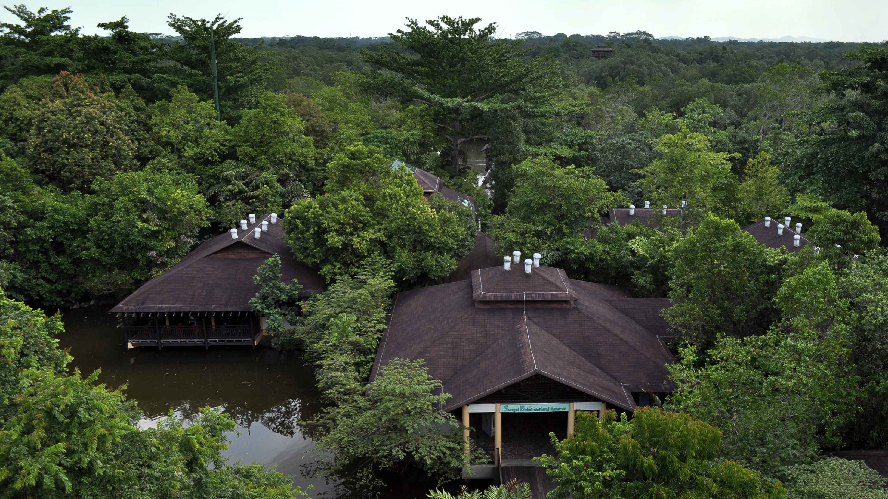
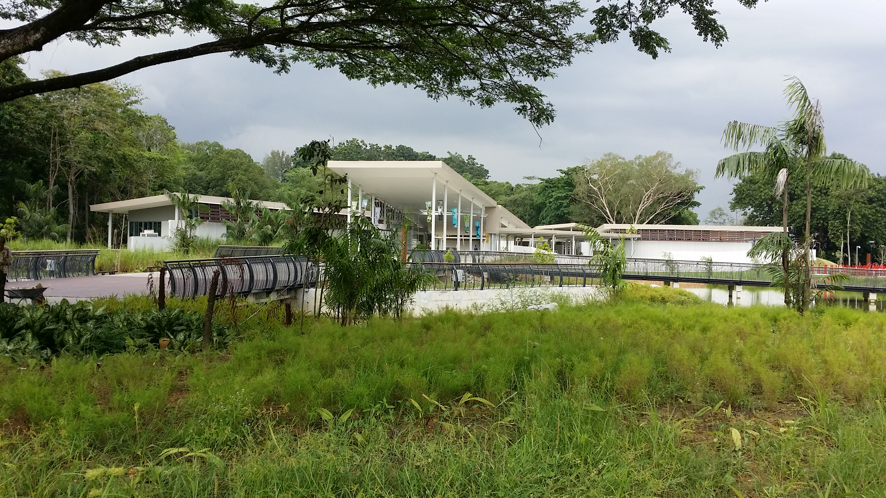
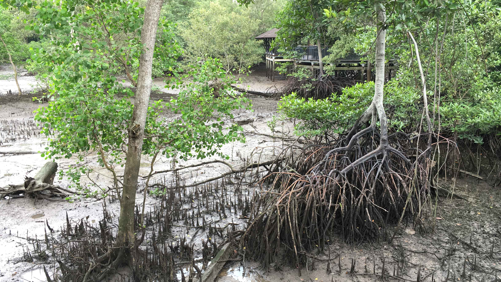
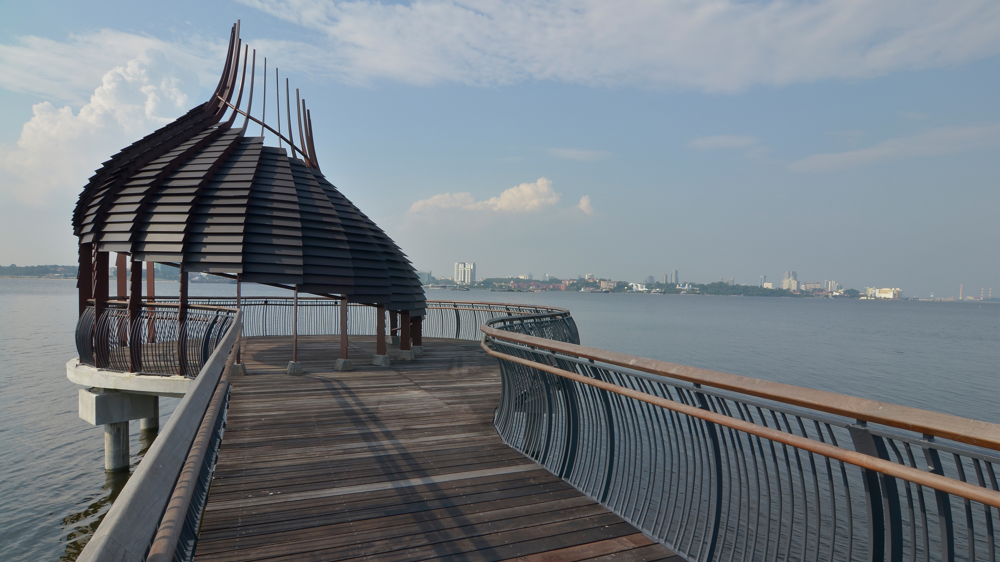
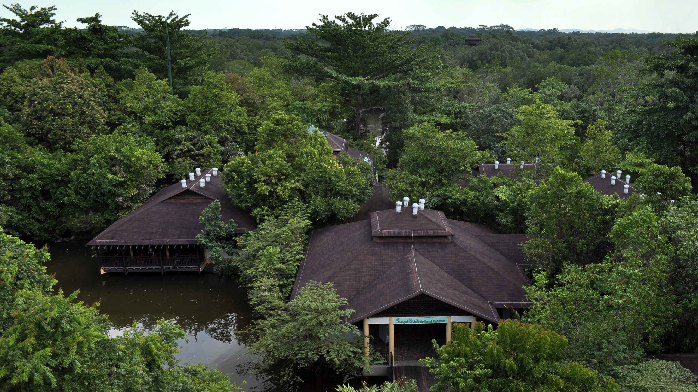
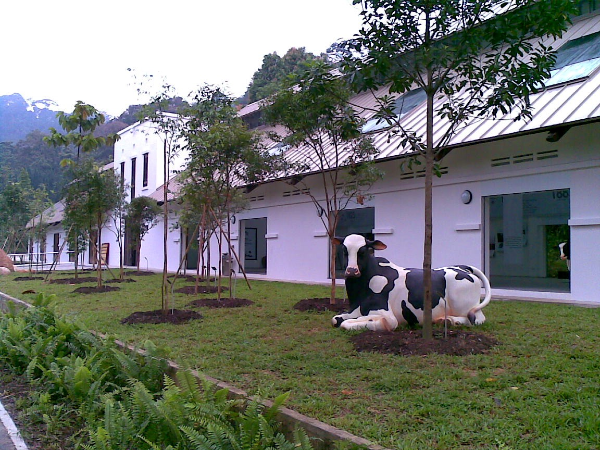
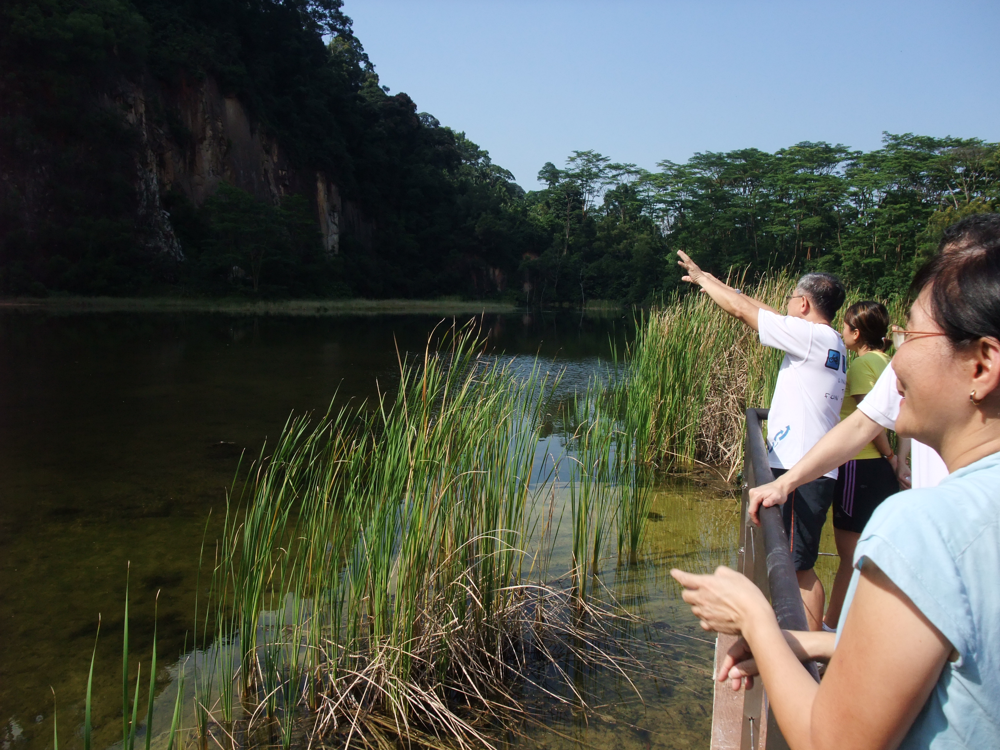

Featured parks
Sungei Buloh Wetland Reserve
 







Discover the beauty and wonders of nature at Singapore’s first ASEAN Heritage Park. Uncover a world filled with rich biodiversity as you wander through the wetlands with an extensive mangrove forest of Sungei Buloh Wetland Reserve.
Sungei Buloh was first opened as a Nature Park in 1993. In 2002, 130 hectares were officially gazetted as a Nature Reserve and renamed Sungei Buloh Wetland Reserve to better reflect its status. In the same year, it was recognised as a site of international importance for migratory birds and awarded a certificate by Wetlands International, marking the reserve's formal entry into the East Asian Australasian Shorebird Site Network, which includes Australia's Kakadu National Park, China's Mai Po – Inner Deep Bay and Japan's Yatsu Tidal Flats. And in 2003, Sungei Buloh Wetland Reserve became Singapore' s first ASEAN Heritage Park.
Since then Sungei Buloh has expanded to include 202ha of mangroves, mudflats, ponds and forests, providing an even larger sanctuary for the flora and fauna that call it home. This includes the newest extension that houses a brand new Visitor Centre and new trails for visitors to explore and enjoy. This new extension is situated along Kranji Way, and is easily accessible by public transport, bringing Sungei Buloh even closer to the public.
Dairy Farm Nature Park
 Set in a rustic environment with multiple trails for hiking and biking, the 63-hectare Dairy Farm Nature Park offers a host of recreational activities and amenities such as a nature trail and former quarry. But the park’s main attraction is the Wallace Education Centre, Singapore’s first field study hub for schools.
Formerly a cow shed, the Wallace Education Centre now houses the Wallace Environmental Learning Lab (WELL), as well as an interpretative centre, where visitors can learn about the changing landscapes of Dairy Farm and Bukit Timah Nature Reserve through various exhibits. As it no longer functions as a dairy farm, there are no real cows at Dairy Farm Nature Park.
Established by NParks and Raffles Girls' Secondary School, WELL provides a holistic programme where students discover Singapore's natural heritage through interesting hands-on activities such as exploring the trails of Dairy Farm, conducting research studies on water, soil, rock and insects, and carrying out data analysis at the Lab. With the materials developed by Raffles Girls' Secondary School, teachers will be able to self-conduct various educational programmes.